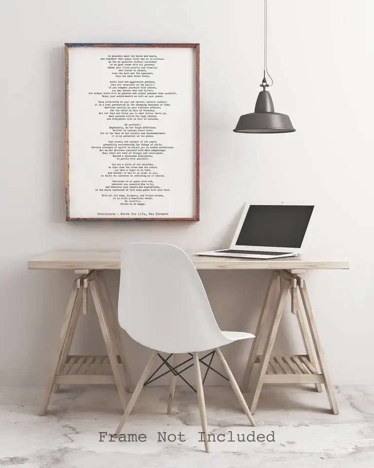

What is Minimalism?
Minimalism is a lifestyle that encourages us to focus on what truly matters by reducing clutter in our lives, both physically and mentally. By living with less, we create more room for experiences, creativity, and well-being.
Purpose of the Site
The Art of Minimalist Living serves as a comprehensive guide for individuals interested in adopting a minimalist lifestyle. It offers insights into the principles and benefits of minimalism, practical decluttering tips, sustainable living insights, mindfulness and well-being resources, community engagement through real-life stories, and curated resources to support users on their minimalist journey.
This site encourages user interaction through a contact form and newsletter subscriptions, aiming to inspire and guide individuals in simplifying their lives and finding more meaning in everyday experiences.
Why "The Art of Minimalist Living"?
This site serves as a comprehensive guide to embracing a minimalist lifestyle. Visitors will find:
- Introduction to minimalism, its key principles, and the benefits of living with less.
- Practical tips on decluttering physical and digital spaces, with interactive tools like checklists and progress trackers.
- Insights into sustainable living, eco-friendly practices, and mindful consumption habits.
- Resources to improve mental well-being through mindfulness and simplicity.
- Real-life stories and interviews with individuals who have adopted minimalism, providing personal insights and advice.
- A curated collection of books, podcasts, and apps to support visitors on their minimalist journey.
Why Choose Minimalism?
People around the world are embracing minimalism to declutter their homes, simplify their schedules, and find joy in the essentials. Minimalism isn’t just about having fewer things—it’s about intentionality and aligning your life with your values.
Explore the Guide
Ready to take the next step? Learn how to declutter your home, practice mindfulness, and connect with a like-minded community. Click the links in the navigation to get started!
Visitor Scenarios:
- Scenario 1: How do I start decluttering my home without feeling overwhelmed?
- Scenario 2: How can minimalism improve my mental well-being?
This question will guide our content on decluttering tips, providing visitors with practical, step-by-step guidance on how to start organizing their physical spaces without stress.
In response to this scenario, the site will explore the connection between minimalism and mental clarity, offering resources on mindfulness and how reducing clutter can lead to less stress and greater focus.
Through these offerings, "The Art of Minimalist Living" aims to inspire and guide individuals looking to simplify their lives and find more meaning in everyday experiences.